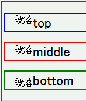
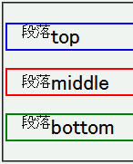

行内でもっとも高さが大きいインライン要素に vertical-align:bottom; を指定すると、その要素の他の文字列等との位置関係は vertical-align:top; の場合と同じになる。
<p style="border:2px solid blue;">段落 <span style="font-size:150%; vertical-align:top;">top</span></p> <p style="border:2px solid red;">段落 <span style="font-size:150%; vertical-align:middle;">middle</span></p> <p style="border:2px solid green;">段落 <span style="font-size:150%; vertical-align:bottom;">bottom</span></p>
段落top
段落middle
段落bottom
文字列「段落」の縦方向の位置は、topの場合に最も上方、bottomの場合に最も下方にあるはずです。
Netscape7.1標準モード
WinIE6.0標準モード
WinIE6.0の標準モードと互換モードで不具合の発生を確認しました。